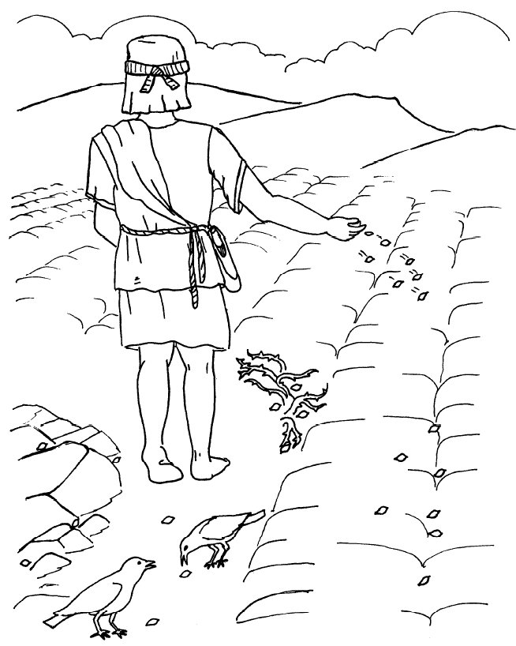
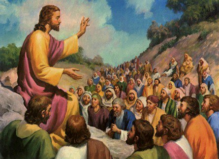

ਸ਼ੁਰੂਆਤ ਵਿੱਚ ਸ਼ਬਦ ਸੀ

ਇੱਕ ਵੱਡਾ ਧਮਾਕਾ?
ਹਰ ਦਸੰਬਰ, ਅਸੀਂ ਸਾਲ ਦੇ ਸਭ ਤੋਂ ਵੱਡੇ ਜਸ਼ਨ ਦੀ ਉਮੀਦ ਕਰਨਾ ਸ਼ੁਰੂ ਕਰਦੇ ਹਾਂ: ਕ੍ਰਿਸਮਸ! ਸਾਰੀਆਂ ਦੁਕਾਨਾਂ ਲਾਈਟਾਂ ਅਤੇ ਰੰਗਾਂ ਨਾਲ ਜਗਮਗਾਉਂਦੀਆਂ ਹਨ (ਹਰ ਸਾਲ ਪਹਿਲਾਂ ਅਤੇ ਚਮਕਦਾਰ), ਅਸੀਂ ਆਪਣੇ ਘਰਾਂ ਦੇ ਆਲੇ ਦੁਆਲੇ ਰੱਖੜੀ ਦੇ ਕੁੰਕੜੇ ਪਾਉਂਦੇ ਹਾਂ ਅਤੇ ਇੱਕ ਰੁੱਖ ਸਜਾਉਂਦੇ ਹਾਂ, ਅਤੇ ਇੱਥੋਂ ਤੱਕ ਕਿ ਕਈ ਸ਼ਹਿਰਾਂ ਦੀਆਂ ਸੜਕਾਂ ਕਈ ਇਮਾਰਤਾਂ ਦੇ ਆਲੇ ਦੁਆਲੇ ਚਮਕਦੀਆਂ ਰੌਸ਼ਨੀਆਂ ਨਾਲ ਚਮਕਦੀਆਂ ਹਨ. ਅਤੇ ਸਭ ਤੋਂ ਵੱਡਾ ਰੋਮਾਂਚ? ਤੋਹਫ਼ੇ! ਸਾਨੂੰ ਕੀ ਮਿਲੇਗਾ? ਕੀ ਇਹ ਉਹੀ ਹੋਵੇਗਾ ਜਿਸਦੀ ਅਸੀਂ ਉਮੀਦ ਕਰ ਰਹੇ ਸੀ? ਅਸੀਂ 25 ਦਸੰਬਰ ਦੀ ਉਡੀਕ ਨਹੀਂ ਕਰ ਸਕਦੇ!

ਇੱਕ ਬਹੁਤ ਹੀ ਸ਼ਾਂਤ ਪ੍ਰਵੇਸ਼
ਤਾਂ, ਕੀ ਇਹ 2000 ਸਾਲ ਪਹਿਲਾਂ ਹੋਇਆ ਸੀ? ਕੀ ਲੋਕ ਬੇਸਬਰੀ ਨਾਲ ਇੰਤਜ਼ਾਰ ਕਰ ਰਹੇ ਸਨ: ਕੀ ਉਨ੍ਹਾਂ ਨੇ ਯਿਸੂ ਦੇ ਜਨਮ ਦੀ ਉਮੀਦ ਵਿੱਚ ਆਪਣੇ ਘਰਾਂ ਨੂੰ ਸਜਾਇਆ ਸੀ? ਕੀ ਉਨ੍ਹਾਂ ਨੇ ਇਸ ਲੰਬੇ ਸਮੇਂ ਤੋਂ ਉਡੀਕਦੇ ਜਨਮ ਦੀ ਉਮੀਦ ਵਿੱਚ ਇੱਕ ਦੂਜੇ ਨੂੰ ਤੋਹਫ਼ੇ ਖਰੀਦੇ ਸਨ? ਜਦੋਂ ਉਹ ਪੈਦਾ ਹੋਇਆ ਸੀ, ਕੀ ਸਾਰੇ ਸੰਸਾਰ ਵਿੱਚ ਇਹ ਐਲਾਨ ਕੀਤਾ ਗਿਆ ਸੀ ਕਿ ਮੁਕਤੀਦਾਤਾ ਆਖਰਕਾਰ ਆ ਗਿਆ ਸੀ?
ਬਿਲਕੁਲ ਨਹੀਂ।

ਜਦੋਂ ਯਿਸੂ ਦਾ ਜਨਮ ਬੈਥਲਹਮ ਵਿੱਚ ਹੋਇਆ ਸੀ, ਜਿਸ ਨੂੰ ਡੇਵਿਡ ਦਾ ਸ਼ਹਿਰ ਵੀ ਕਿਹਾ ਜਾਂਦਾ ਹੈ (ਯਾਦ ਹੈ?), ਸਿਰਫ਼ ਮੁੱਠੀ ਭਰ ਲੋਕ ਹੀ ਉਸ ਬਾਰੇ ਜਾਣਦੇ ਸਨ। ਉੱਥੇ ਮਰਿਯਮ, ਯਿਸੂ ਦੀ ਮਾਤਾ, ਅਤੇ ਯੂਸੁਫ਼, ਉਸ ਦਾ ਵਿਆਹੁਤਾ ਸੀ. ਜਿਸ ਸਰਾਏ ਵਿਚ ਮਰਿਯਮ ਅਤੇ ਯੂਸੁਫ਼ ਠਹਿਰੇ ਹੋਏ ਸਨ, ਉਹ ਸ਼ਾਇਦ ਜਾਣਦੇ ਸਨ ਕਿ ਔਰਤ ਨੇ ਜਨਮ ਦਿੱਤਾ ਸੀ, ਪਰ ਇਹ ਉਨ੍ਹਾਂ ਲਈ ਕੋਈ ਖ਼ਾਸ ਮਹੱਤਵ ਨਹੀਂ ਰੱਖਦਾ ਸੀ।
ਪਰ ਅਸੀਂ ਜਾਣਦੇ ਹਾਂ ਕਿ ਸਵਰਗ ਵਿੱਚ ਬਹੁਤ ਖੁਸ਼ੀ ਸੀ, ਕਿਉਂਕਿ ਲੂਕਾ 2:8-14 ਸਾਨੂੰ ਦੱਸਦਾ ਹੈ ਕਿ ਜਿਸ ਰਾਤ ਯਿਸੂ ਦਾ ਜਨਮ ਹੋਇਆ ਸੀ, ਦੂਤਾਂ ਦਾ ਇੱਕ ਵੱਡਾ ਸਮੂਹ ਕੁਝ ਚਰਵਾਹਿਆਂ ਨੂੰ ਪ੍ਰਗਟ ਹੋਇਆ ਸੀ। ਉਨ੍ਹਾਂ ਨੇ ਨਾ ਸਿਰਫ਼ ਇਹ ਐਲਾਨ ਕੀਤਾ ਕਿ ਯਿਸੂ ਨਾਮ ਦੇ ਬੱਚੇ ਦਾ ਜਨਮ ਹੋਇਆ ਸੀ, ਪਰ ਉਨ੍ਹਾਂ ਨੇ ਅਸਲ ਵਿੱਚ ਐਲਾਨ ਕੀਤਾ ਕਿ ਉਹ ਮਸੀਹਾ ਸੀ ਜਿਸ ਦੀ ਯਹੂਦੀ ਲੋਕ ਉਡੀਕ ਕਰ ਰਹੇ ਸਨ!
ਪਰ ਇਹ ਤੀਹ ਸਾਲ ਹੋਰ ਹੋਣਗੇ ਜਦੋਂ ਕੋਈ ਹੋਰ ਇਸ ਦੀ ਭਾਲ ਸ਼ੁਰੂ ਕਰੇਗਾ.
ਚਾਰ ਬੰਦੇ, ਚਾਰ ਕਹਾਣੀਆਂ

ਯਿਸੂ ਦੀ ਮੌਤ, ਪੁਨਰ-ਉਥਾਨ ਅਤੇ ਸਵਰਗ ਤੋਂ ਬਾਅਦ ਦੇ ਸਾਲਾਂ ਵਿੱਚ, ਚਾਰ ਵੱਖੋ-ਵੱਖਰੇ ਆਦਮੀਆਂ ਨੂੰ ਯਿਸੂ ਦੇ ਜੀਵਨ ਬਾਰੇ ਲਿਖਣ ਲਈ ਪ੍ਰੇਰਿਤ ਕੀਤਾ ਗਿਆ ਸੀ। ਨਵੇਂ ਨੇਮ ਦੀਆਂ ਪਹਿਲੀਆਂ ਚਾਰ ਕਿਤਾਬਾਂ ਦਾ ਨਾਮ ਉਨ੍ਹਾਂ ਆਦਮੀਆਂ ਦੇ ਨਾਮ ਉੱਤੇ ਰੱਖਿਆ ਗਿਆ ਹੈ ਜਿਨ੍ਹਾਂ ਨੇ ਇਹ ਜੀਵਨੀਆਂ ਲਿਖੀਆਂ (ਉਹਨਾਂ ਨੂੰ ਆਮ ਤੌਰ 'ਤੇ ਇੰਜੀਲ ਕਿਹਾ ਜਾਂਦਾ ਹੈ): ਮੈਥਿਊ, ਮਾਰਕ, ਲੂਕਾ ਅਤੇ ਜੌਨ।
ਉਨ੍ਹਾਂ ਨੇ ਇੱਕ ਦੂਜੇ ਨਾਲ ਇਸ ਬਾਰੇ ਚਰਚਾ ਨਹੀਂ ਕੀਤੀ। ਸੰਭਵ ਹੈ ਕਿ ਉਨ੍ਹਾਂ ਨੂੰ ਪਤਾ ਨਾ ਹੋਵੇ ਕਿ ਕੋਈ ਹੋਰ ਯਿਸੂ ਦੀ ਕਹਾਣੀ ਲਿਖ ਰਿਹਾ ਸੀ। ਮੱਤੀ, ਲੂਕਾ ਅਤੇ ਯੂਹੰਨਾ ਸ਼ਾਇਦ ਮਰਕੁਸ ਦੀ ਇੰਜੀਲ ਨੂੰ ਜਾਣਦੇ ਅਤੇ ਪੜ੍ਹੇ ਹੋਣਗੇ। ਵਿਦਵਾਨਾਂ ਦਾ ਮੰਨਣਾ ਹੈ ਕਿ ਇਹ ਈਸਾ ਮਸੀਹ ਦੀ ਪਹਿਲੀ ਜੀਵਨੀ ਸੀ। ਪਰ ਸਾਰੇ ਚਾਰ ਇੰਜੀਲ ਇੱਕ ਦੂਜੇ ਤੋਂ ਸੁਤੰਤਰ ਤੌਰ 'ਤੇ ਲਿਖੇ ਗਏ ਸਨ।

ਜਦੋਂ ਲੋਕ ਕਿਸੇ ਘਟਨਾ ਬਾਰੇ ਕੋਈ ਕਹਾਣੀ ਦੱਸਦੇ ਹਨ, ਤਾਂ ਉਹ ਆਮ ਤੌਰ 'ਤੇ ਸ਼ਾਮਲ ਕਰਨ ਦੀ ਕੋਸ਼ਿਸ਼ ਕਰਨਗੇ ਕਿ ਉਹ ਕੀ ਸੋਚਦੇ ਹਨ ਕਿ ਉਹ ਸਭ ਤੋਂ ਮਹੱਤਵਪੂਰਨ ਭਾਗ ਹਨ। ਇਹ ਮੱਤੀ, ਮਰਕੁਸ, ਲੂਕਾ ਅਤੇ ਯੂਹੰਨਾ ਦੇ ਨਾਲ ਕੇਸ ਸੀ. ਕੁਝ ਘਟਨਾਵਾਂ ਅਤੇ ਕਹਾਣੀਆਂ ਸ਼ਾਮਲ ਕੀਤੀਆਂ ਗਈਆਂ ਹਨ ਜੋ ਹੋਰ ਨਹੀਂ ਹਨ; ਕੁਝ ਘਟਨਾਵਾਂ ਨੂੰ ਥੋੜ੍ਹੇ ਵੱਖਰੇ ਕ੍ਰਮ ਵਿੱਚ ਦੱਸਿਆ ਗਿਆ ਹੈ।
ਮਿਸਾਲ ਲਈ, ਸਿਰਫ਼ ਮੈਥਿਊ ਅਤੇ ਲੂਕਾ ਹੀ ਯਿਸੂ ਦੇ ਜਨਮ ਦੀ ਕਹਾਣੀ ਦੱਸਦੇ ਹਨ। ਸ਼ਾਇਦ, ਲੂਕਾ ਦੇ ਮਨ ਵਿਚ, ਲੋਕਾਂ ਲਈ ਇਹ ਜਾਣਨਾ ਮਹੱਤਵਪੂਰਣ ਸੀ ਕਿ ਯਿਸੂ ਕੁਆਰੀ ਤੋਂ ਪੈਦਾ ਹੋਇਆ ਸੀ। ਮਰਿਯਮ ਦਾ ਮੰਗੇਤਰ, ਜੋਸਫ਼, ਯਿਸੂ ਦਾ ਅਸਲੀ ਪਿਤਾ ਨਹੀਂ ਸੀ; ਯਿਸੂ ਪਰਮੇਸ਼ੁਰ ਦਾ ਪੁੱਤਰ ਸੀ। (ਲੂਕਾ 1:26-38)
ਮੈਥਿਊ ਦੀ ਇੰਜੀਲ ਯਿਸੂ ਦੇ ਪਰਿਵਾਰ ਦੇ ਰੁੱਖ ਨਾਲ ਸ਼ੁਰੂ ਹੁੰਦੀ ਹੈ। ਕੀ ਤੁਹਾਨੂੰ ਯਾਦ ਹੈ ਕਿ ਕਿਵੇਂ, ਬਹੁਤ ਸਮਾਂ ਪਹਿਲਾਂ, ਪਰਮੇਸ਼ੁਰ ਨੇ ਅਬਰਾਹਾਮ ਨਾਲ ਵਾਅਦਾ ਕੀਤਾ ਸੀ ਕਿ ਸੰਸਾਰ ਨੂੰ ਇੱਕ ਰਾਜੇ ਦੁਆਰਾ ਅਸੀਸ ਦਿੱਤੀ ਜਾਵੇਗੀ ਜੋ ਉਸਦੀ ਔਲਾਦ ਵਿੱਚੋਂ ਆਵੇਗਾ (ਉਤਪਤ 12 ਅਧਿਆਇ 3 ਆਇਤ)? ਮੈਥਿਊ ਸਾਨੂੰ ਇਹ ਦੱਸਣ ਲਈ ਧਿਆਨ ਰੱਖਦਾ ਹੈ ਕਿ ਯਿਸੂ ਰਾਜਾ ਡੇਵਿਡ ਦੇ ਸਿੱਧੇ ਵੰਸ਼ ਵਿੱਚੋਂ ਸੀ, ਜੋ ਅਬਰਾਹਾਮ ਦੀ ਸਿੱਧੀ ਵੰਸ਼ ਵਿੱਚੋਂ ਸੀ। ਯਿਸੂ ਇਸ ਪ੍ਰਾਚੀਨ ਭਵਿੱਖਬਾਣੀ ਦੀ ਪੂਰਤੀ ਸੀ।.
ਮਰਕੁਸ ਅਤੇ ਜੌਨ ਦੇ ਮਾਮਲੇ ਵਿੱਚ, ਉਨ੍ਹਾਂ ਨੇ ਮੰਨਿਆ ਕਿ, ਜਦੋਂ ਉਹ ਯਿਸੂ ਬਾਰੇ ਲਿਖ ਰਹੇ ਸਨ, ਤਾਂ ਹਰ ਕੋਈ ਜਾਣਦਾ ਸੀ ਕਿ ਉਹ ਕਿਸ ਬਾਰੇ ਗੱਲ ਕਰ ਰਹੇ ਸਨ: ਯਿਸੂ ਆਪਣੇ ਜ਼ਮਾਨੇ ਵਿੱਚ ਬਹੁਤ ਮਸ਼ਹੂਰ ਸੀ। ਇਸ ਲਈ, ਮਰਕੁਸ ਅਤੇ ਜੌਨ ਨੇ ਯਿਸੂ ਬਾਰੇ ਆਪਣੀਆਂ ਕਹਾਣੀਆਂ ਉਦੋਂ ਸ਼ੁਰੂ ਕੀਤੀਆਂ ਜਦੋਂ ਉਸ ਨੇ ਆਪਣੀ ਧਰਤੀ ਉੱਤੇ ਸੇਵਕਾਈ ਸ਼ੁਰੂ ਕੀਤੀ, ਯਾਨੀ ਜਦੋਂ ਯਿਸੂ ਲਗਭਗ ਤੀਹ ਸਾਲਾਂ ਦਾ ਸੀ।
ਇੱਕ ਮਸੀਹਾ ਜਿਸ ਦੀ ਉਮੀਦ ਨਹੀਂ ਸੀ

ਜਦੋਂ ਅਸੀਂ ਉਨ੍ਹਾਂ ਨਬੀਆਂ ਬਾਰੇ ਸਿੱਖਿਆ ਜਿਨ੍ਹਾਂ ਨੇ ਭਵਿੱਖਬਾਣੀ ਕੀਤੀ ਸੀ ਕਿ ਇਸਰਾਏਲ ਸੂਰ ਅਤੇ ਬਾਬਲ ਤੱਕ ਡਿੱਗ ਜਾਵੇਗਾ, ਤਾਂ ਅਸੀਂ ਇਹ ਵੀ ਸਿੱਖਿਆ ਕਿ ਉਹੀ ਨਬੀ ਭਵਿੱਖਬਾਣੀ ਕਰ ਰਹੇ ਸਨ ਕਿ ਰਾਜਾ ਡੇਵਿਡ ਦੀ ਵੰਸ਼ ਵਿੱਚੋਂ ਇੱਕ ਰਾਜਾ, ਇੱਕ ਮਸੀਹਾ, ਇੱਕ ਮੁਕਤੀਦਾਤਾ ਉਭਰੇਗਾ। ਇਨ੍ਹਾਂ ਭਵਿੱਖਬਾਣੀਆਂ ਨੇ ਯਹੂਦੀਆਂ ਨੂੰ ਉਮੀਦ ਦਿੱਤੀ ਕਿ ਇਜ਼ਰਾਈਲ ਫਿਰ ਤੋਂ ਇੱਕ ਮਹਾਨ ਰਾਸ਼ਟਰ ਬਣ ਜਾਵੇਗਾ, ਕਿ ਇੱਕ ਰਾਜਾ ਇਸਰਾਏਲ ਦੇ ਸਾਰੇ ਦੁਸ਼ਮਣਾਂ ਨੂੰ ਜਿੱਤਣ ਲਈ ਆਵੇਗਾ ਅਤੇ ਉਨ੍ਹਾਂ ਨੂੰ ਇੱਕ ਮਹਾਂਸ਼ਕਤੀ ਬਣਾਵੇਗਾ ਜੋ ਸੰਸਾਰ ਉੱਤੇ ਰਾਜ ਕਰੇਗਾ।
ਪਰ ਯਹੂਦੀ ਸਾਰੀਆਂ ਭਵਿੱਖਬਾਣੀਆਂ ਨਹੀਂ ਪੜ੍ਹ ਰਹੇ ਸਨ। ਜਾਂ, ਜੇ ਉਹ ਪੜ੍ਹ ਰਹੇ ਸਨ, ਤਾਂ ਉਹ ਉਨ੍ਹਾਂ ਵਿੱਚੋਂ ਕੁਝ ਬਹੁਤ ਗਲਤ ਹੋ ਰਹੇ ਸਨ. ਨਬੀਆਂ ਨੇ ਮਸੀਹਾ ਦੇ ਦੋ ਵਰਣਨ ਦਿੱਤੇ ਜੋ ਪਰਮੇਸ਼ੁਰ ਭੇਜੇਗਾ। ਇੱਕ, ਅਸਲ ਵਿੱਚ, ਇੱਕ ਸ਼ਕਤੀਸ਼ਾਲੀ ਸ਼ਾਸਕ ਹੋਣਾ ਸੀ। ਯਹੂਦੀਆਂ ਨੂੰ ਜੋ ਸਮਝ ਨਹੀਂ ਸੀ ਉਹ ਇਹ ਸੀ ਕਿ ਇਹ ਰਾਜਾ ਇੱਕ ਬਹੁਤ ਹੀ ਬੇਮਿਸਾਲ ਜਗ੍ਹਾ ਤੋਂ ਆਵੇਗਾ ਅਤੇ ਉਹ ਬਹੁਤ ਧੂਮਧਾਮ ਨਾਲ ਨਹੀਂ ਆਵੇਗਾ (ਛੋਟੇ ਬੈਥਲਹਮ ਵਿੱਚ ਚੁੱਪ ਰਾਤ ਨੂੰ ਯਾਦ ਹੈ?) ਇਹ ਨਵਾਂ ਰਾਜਾ ਇੱਕ ਅਜਿਹਾ ਆਦਮੀ ਹੋਵੇਗਾ ਜਿਸਨੂੰ ਦੁੱਖ, ਗ਼ਮ ਪਤਾ ਹੋਵੇਗਾ। ਅਤੇ ਦਰਦ, ਪਰ ਰਾਜ ਦੀ ਮਹਿਮਾ ਅਤੇ ਸ਼ਕਤੀ ਨਹੀਂ।
ਇੱਕ ਹਾਰੇ ਹੋਏ, ਨਿਰਾਸ਼ ਲੋਕਾਂ ਵਜੋਂ, ਯਹੂਦੀ ਨਿਮਰ ਯਿਸੂ ਵਰਗੇ ਮਸੀਹਾ ਦੀ ਭਾਲ ਨਹੀਂ ਕਰ ਰਹੇ ਸਨ। ਉਹ ਉਸ ਤੋਂ ਵੱਧ ਸ਼ਾਨਦਾਰ ਵਿਅਕਤੀ ਨੂੰ ਲੱਭ ਰਹੇ ਸਨ।
ਅਤੇ ਇਸ ਤਰ੍ਹਾਂ ਹੋਇਆ ਕਿ ਜਦੋਂ ਯਿਸੂ ਆਇਆ ਅਤੇ ਉਨ੍ਹਾਂ ਦੇ ਵਿਚਕਾਰ ਰਿਹਾ, ਤਾਂ ਉਨ੍ਹਾਂ ਨੇ ਮਸੀਹ ਨੂੰ ਦੇਖਦੇ ਹੀ ਨਾ ਪਛਾਣਿਆ।

ਯਿਸੂ ਦੀ ਸਿੱਖਿਆ
ਯਾਦ ਰੱਖੋ ਕਿ ਯਿਸੂ ਇੱਕ ਅਜਿਹੀ ਜਗ੍ਹਾ ਵਿੱਚ ਵੱਡਾ ਹੋਇਆ ਸੀ ਜਿੱਥੇ ਕਿਸੇ ਹੋਰ ਦੇਸ਼ ਦੁਆਰਾ ਸ਼ਾਸਨ ਕੀਤਾ ਗਿਆ ਸੀ: ਉਦੋਂ ਤੱਕ, ਇਹ ਸ਼ਕਤੀਸ਼ਾਲੀ ਰੋਮੀ ਸਾਮਰਾਜ ਸੀ। ਯਿਸੂ ਇੱਕ ਬਹੁਤ ਹੀ ਸਾਦੇ ਸਮਾਜ ਵਿੱਚ ਵੱਡਾ ਹੋਇਆ ਸੀ। ਯਹੂਦੀ ਲੋਕ ਬਹੁਤ ਧਾਰਮਿਕ ਸਨ, ਅਤੇ ਉਸਦੇ ਗੁਆਂਢੀ ਕਿਸਾਨ ਜਾਂ ਮਛੇਰੇ ਜਾਂ ਵਪਾਰੀ ਸਨ (ਯੂਸੇਫ, ਉਸਦੀ ਮਾਂ ਦਾ ਪਤੀ, ਵਪਾਰ ਦੁਆਰਾ ਇੱਕ ਤਰਖਾਣ ਸੀ)।
ਸ਼ਾਇਦ ਇਸ ਕਾਰਨ ਕਰਕੇ, ਯਿਸੂ ਨੇ ਕਹਾਣੀਆਂ ਸੁਣਾ ਕੇ ਅਧਿਆਤਮਿਕ ਸੱਚਾਈਆਂ ਸਿਖਾਉਣ ਦੀ ਕੋਸ਼ਿਸ਼ ਕੀਤੀ, ਜਿਸਨੂੰ ਦ੍ਰਿਸ਼ਟਾਂਤ ਕਿਹਾ ਜਾਂਦਾ ਹੈ, ਜਿਸ ਵਿੱਚ ਅਕਸਰ ਉਹ ਚੀਜ਼ਾਂ ਸ਼ਾਮਲ ਹੁੰਦੀਆਂ ਹਨ ਜਿਨ੍ਹਾਂ ਤੋਂ ਉਸਦੇ ਸਮਾਜ ਦੇ ਲੋਕ ਜਾਣੂ ਹੋਣਗੇ:
- ਇੱਕ ਕਿਸਾਨ ਆਪਣਾ ਖੇਤ ਬੀਜਦਾ ਹੈ (ਮੱਤੀ 13:2-23)।
- ਇੱਕ ਪੁੱਤਰ ਜੋ ਆਪਣੇ ਮਾਤਾ-ਪਿਤਾ ਦੇ ਵਿਰੁੱਧ ਬਗਾਵਤ ਕਰਦਾ ਹੈ, ਪਰ ਆਪਣੇ ਪਾਪਾਂ ਲਈ ਬਹੁਤ ਪਛਤਾਵਾ ਕਰਕੇ ਉਨ੍ਹਾਂ ਕੋਲ ਵਾਪਸ ਆਉਂਦਾ ਹੈ। (ਲੂਕਾ 15:11-32)
- ਇੱਕ ਆਜੜੀ ਜੋ ਆਪਣੀ ਇੱਕ ਭੇਡ ਗੁਆ ਦਿੰਦਾ ਹੈ (ਮੱਤੀ 18:10-14)

ਫ਼ਰੀਸੀ
ਯਿਸੂ ਦੇ ਦਿਨਾਂ ਵਿੱਚ, ਪੁਜਾਰੀ (ਬਾਈਬਲ ਉਹਨਾਂ ਨੂੰ ਫ਼ਰੀਸੀ ਵੀ ਆਖਦੀ ਹੈ—ਇੱਕ ਸ਼ਬਦ ਜਿਸਦਾ ਅਰਥ ਹੈ "ਵੱਖਰਾ") ਯਹੂਦੀਆਂ ਦੀ ਰੋਜ਼ਾਨਾ ਜ਼ਿੰਦਗੀ ਉੱਤੇ ਰਾਜ ਕਰਦੇ ਸਨ। ਪੁਜਾਰੀ ਇਜ਼ਰਾਈਲ ਦੇ ਬਾਰਾਂ ਗੋਤਾਂ ਵਿੱਚੋਂ ਇੱਕ ਤੋਂ ਆਏ ਸਨ ਜਿਨ੍ਹਾਂ ਨੂੰ ਪਰਮੇਸ਼ੁਰ ਨੇ ਵਿਸ਼ੇਸ਼ ਤੌਰ 'ਤੇ ਇਸ ਭੂਮਿਕਾ ਲਈ ਚੁਣਿਆ ਸੀ: ਲੇਵੀ (ਲੇਵੀ ਦੇ ਗੋਤ ਵਿੱਚੋਂ)। ਉਸ ਨੇ ਯਹੂਦੀਆਂ ਨੂੰ ਕੁਰਾਹੇ ਪੈਣ ਤੋਂ ਰੋਕਣਾ ਆਪਣਾ ਫਰਜ਼ ਸਮਝਿਆ ਜਿਵੇਂ ਕਿ ਉਨ੍ਹਾਂ ਨੇ ਅਤੀਤ ਵਿੱਚ ਕੀਤਾ ਸੀ। ਇਹ ਉਸਦਾ ਕੰਮ ਸੀ, ਉਸਨੇ ਲੋਕਾਂ ਲਈ ਸ਼ਾਸਤਰਾਂ ਨੂੰ ਪੜ੍ਹਨ ਅਤੇ ਵਿਆਖਿਆ ਕਰਨ ਦਾ ਬੀੜਾ ਚੁੱਕਿਆ। (ਯਾਦ ਰੱਖੋ ਕਿ ਅਸੀਂ ਪਹਿਲਾਂ ਕੀ ਕਿਹਾ ਸੀ ਕਿ ਪਰਮੇਸ਼ੁਰ ਨੇ ਸਾਰਿਆਂ ਲਈ ਬਾਈਬਲ ਦਾ ਇਰਾਦਾ ਕੀਤਾ ਸੀ?)
ਯਿਸੂ ਲੇਵੀ ਦੇ ਗੋਤ ਵਿੱਚੋਂ ਨਹੀਂ ਸੀ, ਇਸ ਲਈ ਯਿਸੂ ਜਾਜਕ ਨਹੀਂ ਸੀ।

ਰੱਬੀ ਬਣਨ ਲਈ, ਜਾਂ ਸੱਚਾਈਆਂ ਅਤੇ ਬਚਨ ਦੇ ਗਿਆਨ ਦਾ ਸਿੱਖਿਅਕ, ਇੱਕ ਆਦਮੀ ਨੂੰ ਇੱਕ ਵਿਸ਼ੇਸ਼ ਰੱਬੀ ਸਕੂਲ ਵਿੱਚ ਸਿਖਲਾਈ ਦੇ ਲੰਬੇ ਸਮੇਂ ਵਿੱਚੋਂ ਲੰਘਣਾ ਪੈਂਦਾ ਸੀ।
ਯਿਸੂ ਰੱਬੀ ਸਕੂਲ ਨਹੀਂ ਗਿਆ ਸੀ, ਇਸ ਲਈ ਫ਼ਰੀਸੀਆਂ ਨੇ ਉਸ ਨੂੰ ਅਧਿਆਪਕ ਬਣਨ ਲਈ “ਯੋਗ” ਨਹੀਂ ਸਮਝਿਆ।
ਇਸ ਲਈ, ਆਪਣੀ ਸੇਵਕਾਈ ਦੇ ਸ਼ੁਰੂ ਤੋਂ ਹੀ, ਯਿਸੂ ਦਾ ਧਾਰਮਿਕ ਅਧਿਕਾਰੀਆਂ ਨਾਲ ਮਤਭੇਦ ਸੀ। ਯਿਸੂ ਦੀ ਸਿੱਖਿਆ ਸੁਣਨ ਲਈ ਲੋਕਾਂ ਦੀ ਭੀੜ ਇਕੱਠੀ ਹੋਈ। ਉਸ ਦੀਆਂ ਸਿੱਖਿਆਵਾਂ ਦੇ ਸਭ ਤੋਂ ਮਸ਼ਹੂਰ ਸੰਗ੍ਰਹਿ ਵਿੱਚੋਂ ਇੱਕ, ਜਿਸ ਨੂੰ ਪਹਾੜੀ ਉਪਦੇਸ਼ ਵਜੋਂ ਜਾਣਿਆ ਜਾਂਦਾ ਹੈ (ਮੱਤੀ 5 ਅਤੇ ਲੂਕਾ 6 ਦੋਵਾਂ ਵਿੱਚ ਪਾਇਆ ਜਾਂਦਾ ਹੈ), ਅਸਲ ਵਿੱਚ ਉਸ ਨੇ ਜੋ ਵੀ ਨੁਕਤਾ ਬਣਾਇਆ ਉਹ ਉਸ ਦੇ ਵਿਰੁੱਧ ਸੀ ਜੋ ਉਹ ਬਣਾ ਰਿਹਾ ਸੀ। ਫ਼ਰੀਸੀਆਂ ਨੇ ਲੋਕਾਂ ਨੂੰ ਯਕੀਨ ਦਿਵਾਇਆ।
ਕੁਝ ਮੁੱਖ ਵਿਚਾਰ ਜੋ ਯਿਸੂ ਚਾਹੁੰਦਾ ਸੀ ਕਿ ਉਸਦੇ ਚੇਲੇ ਸਿੱਖਣ:
- ਪਰਮੇਸ਼ੁਰ ਲੋਕਾਂ ਨੂੰ ਪਿਆਰ ਕਰਦਾ ਹੈ ਅਤੇ ਚਾਹੁੰਦਾ ਹੈ ਕਿ ਉਹ ਬਦਲੇ ਵਿੱਚ ਉਸਨੂੰ ਪਿਆਰ ਕਰਨ। ਪਰਮੇਸ਼ੁਰ ਲਈ ਆਪਣੇ ਪਿਆਰ ਨੂੰ ਦਿਖਾਉਣ ਦਾ ਇੱਕ ਤਰੀਕਾ ਹੈ ਨਾ ਸਿਰਫ਼ ਕਾਨੂੰਨ ਦੀ, ਸਗੋਂ ਆਤਮਾ ਦੀ ਵੀ ਪਾਲਣਾ ਕਰਨਾ। ਇਸ ਲਈ, ਈਮਾਨਦਾਰ ਹੋਣ ਦੇ ਨਾਲ-ਨਾਲ, ਯਿਸੂ ਨੇ ਆਪਣੇ ਚੇਲਿਆਂ ਨੂੰ ਦਿਆਲੂ, ਦਇਆਵਾਨ ਅਤੇ ਨਿਆਂ ਕਰਨ ਲਈ ਕਿਹਾ।
- ਯਿਸੂ ਚਾਹੁੰਦਾ ਹੈ ਕਿ ਉਸਦੇ ਚੇਲੇ ਉਹਨਾਂ ਦੇ ਪਿਆਰ ਦੁਆਰਾ ਜਾਣੇ ਜਾਣ: ਉਹਨਾਂ ਦੇ ਸੰਗੀ ਵਿਸ਼ਵਾਸੀਆਂ ਲਈ ਪਿਆਰ, ਇੱਥੋਂ ਤੱਕ ਕਿ ਉਹਨਾਂ ਦੇ ਦੁਸ਼ਮਣਾਂ ਲਈ ਵੀ। ਪਰਮੇਸ਼ੁਰ ਨੇ ਸਾਡੇ ਪਾਪ ਮਾਫ਼ ਕਰਨ ਦੀ ਪੇਸ਼ਕਸ਼ ਕੀਤੀ ਹੈ; ਉਹ ਚਾਹੁੰਦਾ ਹੈ ਕਿ ਅਸੀਂ ਇਕ-ਦੂਜੇ ਨੂੰ ਮਾਫ਼ ਕਰੀਏ।
ਸਭ ਤੋਂ ਮਹੱਤਵਪੂਰਣ ਗੱਲ ਜੋ ਯਿਸੂ ਆਪਣੇ ਚੇਲਿਆਂ ਨੂੰ ਦੱਸਣਾ ਚਾਹੁੰਦਾ ਸੀ ਉਹ ਇਹ ਸੀ ਕਿ ਉਹ, ਯਿਸੂ, ਪਰਮੇਸ਼ੁਰ ਦਾ ਪੁੱਤਰ ਸੀ, ਅਤੇ ਇਹ ਕਿ ਪਾਪ ਤੋਂ ਮੁਕਤੀ ਕੇਵਲ ਉਸਦੇ ਦੁਆਰਾ ਹੀ ਆਈ ਸੀ। ਬਾਈਬਲ ਦੀਆਂ ਸਭ ਤੋਂ ਮਸ਼ਹੂਰ ਆਇਤਾਂ ਵਿੱਚੋਂ ਇੱਕ ਨਵੇਂ ਨੇਮ ਦੀ ਘੋਸ਼ਣਾ ਕਰਦੀ ਹੈ ਜੋ ਪਰਮੇਸ਼ੁਰ ਮਨੁੱਖਜਾਤੀ ਨਾਲ ਬਣਾ ਰਿਹਾ ਸੀ, ਯੂਹੰਨਾ 3 ਅਧਿਆਇ 16 ਆਇਤ:
ਕਿਉਂਕਿ ਪਰਮੇਸ਼ੁਰ ਨੇ ਜਗਤ ਨੂੰ ਅਜਿਹਾ ਪਿਆਰ ਕੀਤਾ ਜੋ ਉਹ ਨੇ ਆਪਣਾ ਇਕਲੌਤਾ ਪੁੱਤ੍ਰ ਬਖ਼ਸ਼ ਦਿੱਤਾ ਤਾਂ ਜੋ ਹਰੇਕ ਜੋ ਉਸ ਉੱਤੇ ਨਿਹਚਾ ਕਰੇ ਨਾਸ ਨਾ ਹੋਵੇ ਪਰ ਸਦੀਪਕ ਜੀਉਣ ਪਾਵੇ।
ਯਿਸੂ ਦੁਆਰਾ ਇਹ ਘੋਸ਼ਣਾ ਦੋ ਕਾਰਨਾਂ ਕਰਕੇ ਕ੍ਰਾਂਤੀਕਾਰੀ ਸੀ: ਪਹਿਲਾ, ਇਹ ਵਿਚਾਰ ਕਿ ਯਿਸੂ ਪਰਮੇਸ਼ੁਰ ਦਾ ਪੁੱਤਰ ਸੀ ਬਹੁਤ ਸਾਰੇ ਯਹੂਦੀਆਂ ਲਈ ਅਸਵੀਕਾਰਨਯੋਗ ਸੀ। ਕੇਵਲ ਇੱਕ ਮਨੁੱਖ ਹੀ ਰੱਬ ਕਿਵੇਂ ਹੋ ਸਕਦਾ ਹੈ? ਇਕ ਹੋਰ ਵਿਚਾਰ ਜਿਸ ਨੂੰ ਯਿਸੂ ਦੇ ਜ਼ਮਾਨੇ ਦੇ ਧਾਰਮਿਕ ਆਗੂ ਸਵੀਕਾਰ ਨਹੀਂ ਕਰ ਸਕਦੇ ਸਨ ਉਹ ਸੀ ਕਿ ਮੁਕਤੀ ਹੁਣ ਸਿਰਫ਼ ਯਹੂਦੀਆਂ ਲਈ ਨਹੀਂ ਸੀ। ਯਿਸੂ ਨੇ ਕਿਹਾ ਕਿ ਜੋ ਕੋਈ ਵੀ ਉਸ ਵਿੱਚ ਵਿਸ਼ਵਾਸ ਕਰਦਾ ਹੈ ਉਹ ਪਰਮੇਸ਼ੁਰ ਦੇ ਰਾਜ ਵਿੱਚ ਦਾਖਲ ਹੋ ਸਕਦਾ ਹੈ (ਯੂਹੰਨਾ 1 ਅਧਿਆਇ 12 ਆਇਤ)।
ਸਦੂਕੀ
ਸਦੂਕੀਆਂ, ਯਹੂਦੀਆਂ ਦਾ ਇੱਕ ਪ੍ਰਮੁੱਖ, ਅਕਸਰ ਅਮੀਰ ਸਮੂਹ ਜੋ ਯਿਸੂ ਦੇ ਸਮੇਂ ਵਿੱਚ ਰਹਿੰਦਾ ਸੀ, ਨੇ ਰੋਮੀਆਂ ਨਾਲ ਰਾਜਨੀਤਿਕ ਪ੍ਰਬੰਧ ਕੀਤਾ ਸੀ, ਤਾਂ ਜੋ ਉਹ ਇੱਕ ਨਿਸ਼ਚਿਤ ਮਾਤਰਾ ਵਿੱਚ ਰਾਜਨੀਤਿਕ ਸ਼ਕਤੀ ਦਾ ਆਨੰਦ ਮਾਣ ਸਕਣ। ਸਦੂਕੀ ਕਦੇ-ਕਦੇ ਆਪਣੇ ਸਾਥੀ ਯਹੂਦੀਆਂ ਤੋਂ ਰੋਮਨ ਟੈਕਸ ਇਕੱਠੇ ਕਰਨ ਦਾ ਕੰਮ ਲੈਂਦੇ ਸਨ, ਅਤੇ ਅਕਸਰ ਇਸ ਬਾਰੇ ਬੇਈਮਾਨ ਹੁੰਦੇ ਸਨ, ਲੋਕਾਂ ਨੂੰ ਆਪਣੇ ਲਈ ਇੱਕ ਹਿੱਸਾ ਰੱਖਣ ਲਈ ਅਸਲ ਵਿੱਚ ਬਕਾਇਆ ਨਾਲੋਂ ਵੱਧ ਭੁਗਤਾਨ ਕਰਨ ਦੀ ਲੋੜ ਹੁੰਦੀ ਸੀ। ਬਹੁਤ ਸਾਰੇ ਯਹੂਦੀਆਂ ਦੁਆਰਾ ਸਦੂਕੀਆਂ ਨੂੰ ਨਫ਼ਰਤ ਕਰਨ ਵਾਲੇ ਰੋਮੀਆਂ ਨਾਲ ਨਜ਼ਦੀਕੀ ਸਬੰਧਾਂ ਕਰਕੇ ਗੱਦਾਰ ਮੰਨਿਆ ਜਾਂਦਾ ਸੀ।
ਯਹੂਦੀਆਂ ਵਿਚ ਬਗਾਵਤ ਦੀ ਗੱਲ ਅਕਸਰ ਹੁੰਦੀ ਸੀ। ਉਹ ਰੋਮਨ ਸ਼ਾਸਨ ਦੀਆਂ ਸਖ਼ਤੀਆਂ ਅਧੀਨ ਮਿਹਨਤ ਕਰ ਰਹੇ ਸਨ। ਸਦੂਕੀ ਯਹੂਦੀਆਂ ਅਤੇ ਰੋਮੀਆਂ ਵਿਚਕਾਰ ਸ਼ਾਂਤੀ ਬਣਾਈ ਰੱਖਣਾ ਆਪਣਾ ਫਰਜ਼ ਸਮਝਦੇ ਸਨ। ਸਦੂਕੀਆਂ ਦਾ ਮੰਨਣਾ ਸੀ ਕਿ ਯਹੂਦੀ ਰੋਮੀਆਂ ਨੂੰ ਜਿੰਨਾ ਘੱਟ ਪਰੇਸ਼ਾਨ ਕਰਨਗੇ, ਉੱਨਾ ਹੀ ਸਾਰਿਆਂ ਲਈ ਆਸਾਨ ਹੋਵੇਗਾ।

ਯਿਸੂ ਦੇ ਨਾਲ ਵਿਰੋਧ
ਜਿਵੇਂ ਅਸੀਂ ਪਹਿਲਾਂ ਦੇਖਿਆ ਸੀ, ਯਿਸੂ ਲੋਕਾਂ ਨੂੰ ਸਿਖਾਉਂਦਾ ਰਿਹਾ ਅਤੇ ਪਰਮੇਸ਼ੁਰ ਅਤੇ ਉਸ ਦੇ ਪਿਆਰ ਬਾਰੇ ਖ਼ੁਸ਼ ਖ਼ਬਰੀ ਸਾਰਿਆਂ ਨੂੰ ਸੁਣਾਉਂਦਾ ਰਿਹਾ। ਫ਼ਰੀਸੀਆਂ ਨੂੰ ਇਹ ਬਿਲਕੁਲ ਵੀ ਪਸੰਦ ਨਹੀਂ ਸੀ। ਉਹ ਯਹੂਦੀਆਂ ਵਿਚ ਇਕੋ-ਇਕ ਧਾਰਮਿਕ ਅਧਿਕਾਰ ਬਣਨਾ ਚਾਹੁੰਦਾ ਸੀ।
ਯਿਸੂ ਨੇ ਲੋਕਾਂ ਨੂੰ ਅਧਿਆਤਮਿਕ ਮਾਮਲਿਆਂ ਬਾਰੇ ਪੁਜਾਰੀਆਂ ਨਾਲੋਂ ਜ਼ਿਆਦਾ ਡੂੰਘਾਈ ਨਾਲ ਸੋਚਣਾ ਸਿਖਾਇਆ, ਅਤੇ ਉਹ ਇਸ ਲਈ ਉਸ ਨੂੰ ਪਿਆਰ ਕਰਦੇ ਸਨ।
ਸਦੂਕੀਆਂ ਨੂੰ ਵੀ ਉਹ ਭੀੜ ਪਸੰਦ ਨਹੀਂ ਸੀ ਜੋ ਯਿਸੂ ਆਕਰਸ਼ਿਤ ਕਰ ਰਿਹਾ ਸੀ। ਲੋਕਾਂ ਦੀ ਭੀੜ ਨੂੰ ਆਸਾਨੀ ਨਾਲ ਕਾਬੂ ਨਹੀਂ ਕੀਤਾ ਜਾ ਸਕਦਾ ਸੀ। ਜੇ ਯਿਸੂ ਚਾਹੁੰਦਾ ਸੀ ਕਿ ਉਸ ਦੇ ਆਲੇ-ਦੁਆਲੇ ਦੀਆਂ ਭੀੜਾਂ ਰੋਮ ਦੇ ਵਿਰੁੱਧ ਬਗਾਵਤ ਕਰਕੇ ਉਸ ਦਾ ਪਿੱਛਾ ਕਰਨ, ਤਾਂ ਉਹ ਉਸ ਨੂੰ ਰੋਕਣ ਲਈ ਕੀ ਕਰ ਸਕਦੇ ਸਨ?

ਸਦੂਕੀ ਜਾਣਦੇ ਸਨ ਕਿ ਯਹੂਦੀਆਂ ਦੀ ਵੱਡੀ ਭੀੜ ਵੀ ਰੋਮੀ ਫ਼ੌਜ ਦੀ ਤਾਕਤ ਨਾਲ ਮੇਲ ਨਹੀਂ ਖਾਂ ਸਕਦੀ ਸੀ। ਜੇ ਰੋਮੀਆਂ ਨੂੰ ਯਹੂਦੀ ਬਗਾਵਤ ਨੂੰ ਰੋਕਣਾ ਪਿਆ, ਤਾਂ ਉਹ ਉਨ੍ਹਾਂ ਨੂੰ ਬਿਲਕੁਲ ਕੁਚਲ ਦੇਣਗੇ (ਅਤੇ ਯਿਸੂ ਦੇ ਜੀਵਨ ਵਿੱਚ ਲਗਭਗ 35 ਸਾਲ, ਉਨ੍ਹਾਂ ਨੇ ਬਿਲਕੁਲ ਅਜਿਹਾ ਕੀਤਾ)। ਰੋਮੀਆਂ ਲਈ ਉਨ੍ਹਾਂ ਦੀ ਰਾਜਨੀਤਿਕ ਸ਼ਕਤੀ ਦਾ ਹੁਣ ਕੋਈ ਮਤਲਬ ਨਹੀਂ ਹੋਵੇਗਾ, ਅਤੇ ਸਦੂਕੀ ਯਿਸੂ ਵਰਗੇ ਕਿਸੇ ਵਿਅਕਤੀ ਲਈ ਆਪਣੀ ਸ਼ਕਤੀ ਗੁਆਉਣ ਵਾਲੇ ਨਹੀਂ ਸਨ!
ਸਭ ਤੋਂ ਭੈੜਾ ਕੰਮ ਜੋ ਯਿਸੂ ਨੇ ਕੀਤਾ ਸੀ ਉਹ ਲੋਕਾਂ ਨੂੰ ਇਹ ਐਲਾਨ ਕਰਨਾ ਸੀ ਕਿ ਉਹ ਅਸਲ ਵਿੱਚ ਪਰਮੇਸ਼ੁਰ ਦਾ ਪੁੱਤਰ ਸੀ।
ਯਿਸੂ ਨੇ ਉਨ੍ਹਾਂ ਨੂੰ ਦੱਸਿਆ ਕਿ ਉਹ ਉਹ ਮਸੀਹਾ ਸੀ ਜਿਸ ਦੀ ਉਹ ਇੰਨੇ ਲੰਬੇ ਸਮੇਂ ਤੋਂ ਇੰਤਜ਼ਾਰ ਕਰ ਰਹੇ ਸਨ। ਫ਼ਰੀਸੀਆਂ ਲਈ, ਇਹ ਕੁਫ਼ਰ ਸੀ (ਪਰਮੇਸ਼ੁਰ ਦਾ ਉੱਚ ਨਿਰਾਦਰ)! ਯਹੂਦੀ ਕਾਨੂੰਨ ਦੇ ਤਹਿਤ ਇਹ ਮੌਤ ਦੀ ਸਜ਼ਾਯੋਗ ਅਪਰਾਧ ਸੀ।
ਵਾਰ-ਵਾਰ, ਯਿਸੂ ਨੇ ਮਸੀਹਾ ਹੋਣ ਦੇ ਆਪਣੇ ਦਾਅਵੇ ਦਾ ਸਮਰਥਨ ਕਰਨ ਲਈ ਚਿੰਨ੍ਹ ਅਤੇ ਚਮਤਕਾਰ ਕੀਤੇ: ਉਸਨੇ ਬਿਮਾਰਾਂ ਨੂੰ ਚੰਗਾ ਕੀਤਾ, ਅੰਨ੍ਹਿਆਂ ਨੂੰ ਦ੍ਰਿਸ਼ਟੀ ਦਿੱਤੀ, ਅਤੇ ਲੰਗੜਿਆਂ ਨੂੰ ਮੁੜ ਤੁਰਿਆ। ਉਸਨੇ ਇੱਕ ਆਦਮੀ ਨੂੰ ਮੁਰਦਿਆਂ ਵਿੱਚੋਂ ਵੀ ਜਿਵਾਲਿਆ!

ਯਿਸੂ ਨੂੰ ਫ਼ਰੀਸੀਆਂ ਲਈ ਖ਼ਤਰਾ ਮੰਨਿਆ ਜਾਂਦਾ ਸੀ (ਕਿਉਂਕਿ ਉਹ ਲੋਕਾਂ ਨੂੰ ਉਨ੍ਹਾਂ ਦੇ ਅਧਿਕਾਰ ਉੱਤੇ ਸ਼ੱਕ ਕਰ ਰਿਹਾ ਸੀ) ਅਤੇ ਸਦੂਕੀਆਂ ਲਈ (ਕਿਉਂਕਿ ਉਹ ਉਨ੍ਹਾਂ ਦੀ ਸ਼ਕਤੀ ਲਈ ਖ਼ਤਰਾ ਹੋ ਸਕਦਾ ਹੈ)।
ਫ਼ਰੀਸੀ ਅਤੇ ਸਦੂਕੀ ਆਮ ਤੌਰ 'ਤੇ ਇਕ ਦੂਜੇ ਨਾਲ ਦੋਸਤਾਨਾ ਜਾਂ ਸਹਿਯੋਗੀ ਨਹੀਂ ਸਨ, ਪਰ ਹੁਣ ਉਨ੍ਹਾਂ ਦਾ ਇਕ ਸਾਂਝਾ ਦੁਸ਼ਮਣ ਸੀ—ਯਿਸੂ।

ਇੱਕ ਰਾਤ, ਜਦੋਂ ਯਿਸੂ ਪ੍ਰਾਰਥਨਾ ਕਰ ਰਿਹਾ ਸੀ, ਯਹੂਦਾ ਇਸਕਰਿਯੋਤੀ, ਇੱਕ ਆਦਮੀ ਜੋ ਯਿਸੂ ਦੇ ਸਭ ਤੋਂ ਨਜ਼ਦੀਕੀ ਦੋਸਤਾਂ ਵਿੱਚੋਂ ਇੱਕ ਸੀ (ਉਸ ਦੇ ਬਾਰਾਂ ਚੇਲਿਆਂ) ਨੇ ਫ਼ਰੀਸੀਆਂ ਅਤੇ ਸਦੂਕੀਆਂ ਦੇ ਇੱਕ ਸਮੂਹ ਦੀ ਅਗਵਾਈ ਕੀਤੀ ਜਿੱਥੇ ਉਹ ਜਾਣਦਾ ਸੀ ਕਿ ਯਿਸੂ ਪ੍ਰਾਰਥਨਾ ਕਰ ਰਿਹਾ ਸੀ, ਗਥਸਮਨੀ ਦੇ ਬਾਗ਼ ਵਿੱਚ। ਯਿਸੂ ਨੇ ਗ੍ਰਿਫਤਾਰ ਕੀਤੇ ਜਾਣ ਦਾ ਵਿਰੋਧ ਨਹੀਂ ਕੀਤਾ, ਭਾਵੇਂ ਕਿ ਉਹ ਜਾਣਦਾ ਸੀ ਕਿ ਉਸ ਨੇ ਕੋਈ ਅਪਰਾਧ ਨਹੀਂ ਕੀਤਾ ਸੀ।
ਯਿਸੂ ਉੱਤੇ ਦੋਸ਼ ਲਾਉਣ ਵਾਲੇ ਉਸ ਨੂੰ ਗੁਪਤ ਮੁਕੱਦਮੇ ਲਈ ਮੰਦਰ ਦੇ ਪ੍ਰਧਾਨ ਜਾਜਕ ਕਯਾਫ਼ਾ ਕੋਲ ਲੈ ਗਏ। ਉਨ੍ਹਾਂ ਨੇ ਕਯਾਫ਼ਾ ਨੂੰ ਦੱਸਿਆ ਕਿ ਯਿਸੂ ਮਸੀਹਾ ਹੋਣ ਦਾ ਦਾਅਵਾ ਕਰਨ ਲਈ ਕੁਫ਼ਰ ਦਾ ਦੋਸ਼ੀ ਸੀ।
ਜਦੋਂ ਉਹ ਪ੍ਰਧਾਨ ਜਾਜਕ ਦੇ ਸਾਮ੍ਹਣੇ ਖੜ੍ਹਾ ਹੋਇਆ, ਤਾਂ ਯਿਸੂ ਨੇ ਕਿਹਾ, "ਮੈਂ ਮਸੀਹ ਹਾਂ, ਅਤੇ ਤੁਸੀਂ ਮੈਨੂੰ ਪਰਮੇਸ਼ੁਰ ਦੇ ਸੱਜੇ ਪਾਸੇ ਬੈਠੇ ਹੋਏ ਵੇਖੋਂਗੇ।" (ਮਰਕੁਸ 14:62)
ਭਾਵੇਂ ਕਿ ਝੂਠੇ ਗਵਾਹ ਯਿਸੂ ਦੇ ਵਿਰੁੱਧ "ਸਬੂਤ" ਦੇਣ ਲਈ ਇਕੱਠੇ ਕੀਤੇ ਗਏ ਸਨ, ਕਾਇਫ਼ਾ ਨੇ ਫ਼ੈਸਲਾ ਕੀਤਾ ਕਿ ਯਿਸੂ ਦਾ ਬਿਆਨ ਇਕੱਲੇ ਦੋਸ਼ ਦਾ ਕਬੂਲ ਸੀ। ਉਸਦਾ ਫੈਸਲਾ ਯਿਸੂ ਨੂੰ ਮੌਤ ਦੇ ਘਾਟ ਉਤਾਰਨਾ ਸੀ।
ਯਹੂਦੀਆਂ ਨੂੰ ਰੋਮੀ ਗਵਰਨਰ ਪਿਲਾਤੁਸ ਦੀ ਇਜਾਜ਼ਤ ਤੋਂ ਬਿਨਾਂ ਮੌਤ ਦੀ ਸਜ਼ਾ ਨਹੀਂ ਦਿੱਤੀ ਜਾ ਸਕਦੀ ਸੀ। ਜਾਜਕ ਯਿਸੂ ਨੂੰ ਪਿਲਾਤੁਸ ਦੇ ਸਾਮ੍ਹਣੇ ਲਿਆਏ ਅਤੇ ਉਨ੍ਹਾਂ ਨੂੰ ਦੱਸਿਆ ਕਿ ਯਿਸੂ ਨੇ ਦੇਸ਼ਧ੍ਰੋਹ ਕੀਤਾ ਹੈ: ਉਹ ਮਸੀਹਾ ਹੋਣ ਦਾ ਦਾਅਵਾ ਕਰਦਾ ਹੈ, ਇਸ ਲਈ ਉਨ੍ਹਾਂ ਨੇ ਕਿਹਾ, ਇਹ ਉਹ ਹੈ ਜੋ ਆਪਣੇ ਆਪ ਨੂੰ ਯਹੂਦੀਆਂ ਦਾ ਰਾਜਾ ਕਹਿੰਦਾ ਹੈ। ਰੋਮਨ ਕਾਨੂੰਨ ਦੇ ਤਹਿਤ, ਸੀਜ਼ਰ ਤੋਂ ਇਲਾਵਾ ਕੋਈ ਵੀ ਆਪਣੇ ਆਪ ਨੂੰ ਰਾਜਾ ਨਹੀਂ ਕਹਿ ਸਕਦਾ ਸੀ।
ਪਿਲਾਤੁਸ ਨੇ ਅਸਲ ਵਿੱਚ ਇਹ ਨਹੀਂ ਸੋਚਿਆ ਸੀ ਕਿ ਯਿਸੂ ਰਾਜਾ ਹੋਣ ਦਾ ਗੰਭੀਰ ਦਾਅਵਾ ਕਰ ਰਿਹਾ ਸੀ, ਕਿਉਂਕਿ ਜਦੋਂ ਉਹ ਮੁਕੱਦਮੇ ਵਿੱਚ ਸੀ ਤਾਂ ਉਸਨੇ ਆਪਣੇ ਲਈ ਬਚਾਅ ਦੀ ਪੇਸ਼ਕਸ਼ ਵੀ ਨਹੀਂ ਕੀਤੀ ਸੀ। ਪਰ ਯਹੂਦੀ ਜਾਜਕਾਂ ਨੇ ਜ਼ੋਰ ਦੇ ਕੇ ਕਿਹਾ ਕਿ ਯਿਸੂ ਨੂੰ ਮੌਤ ਦੇ ਘਾਟ ਉਤਾਰ ਦਿੱਤਾ ਜਾਵੇ। ਇੱਥੋਂ ਤੱਕ ਕਿ ਜਦੋਂ ਪਿਲਾਤੁਸ ਨੇ ਉਨ੍ਹਾਂ ਨੂੰ ਦੋਸ਼ੀ ਠਹਿਰਾਏ ਗਏ ਕਾਤਲ, ਬਰੱਬਾ ਨੂੰ ਰਿਹਾਅ ਕਰਨ, ਜਾਂ ਯਿਸੂ ਨੂੰ ਆਜ਼ਾਦ ਕਰਨ ਦੀ ਚੋਣ ਦੀ ਪੇਸ਼ਕਸ਼ ਕੀਤੀ, ਤਾਂ ਲੋਕਾਂ ਨੇ ਯਿਸੂ ਨੂੰ ਮੌਤ ਦੇ ਘਾਟ ਉਤਾਰਨ ਲਈ ਦੁਹਾਈ ਦਿੱਤੀ। (ਮਰਕੁਸ 15:6-13)

ਯਿਸੂ ਮਰਦਾ ਹੈ ਅਤੇ ਜੀ ਉਠਾਇਆ ਜਾਂਦਾ ਹੈ
ਸਲੀਬ ਦੇਣਾ ਮੌਤ ਦੀ ਸਜ਼ਾ ਦਾ ਇੱਕ ਰੂਪ ਸੀ ਜੋ ਆਮ ਤੌਰ 'ਤੇ ਰੋਮੀਆਂ ਦੁਆਰਾ ਵਰਤਿਆ ਜਾਂਦਾ ਸੀ। ਇਹ ਮਰਨ ਦਾ ਸਭ ਤੋਂ ਸ਼ਰਮਨਾਕ ਤਰੀਕਾ ਸੀ। ਹਾਲਾਂਕਿ ਯਿਸੂ ਨੂੰ ਆਮ ਤੌਰ 'ਤੇ ਪੇਂਟਿੰਗਾਂ ਵਿੱਚ ਇੱਕ ਲੰਗੜੀ ਪਹਿਨਣ ਦੇ ਰੂਪ ਵਿੱਚ ਦਰਸਾਇਆ ਗਿਆ ਹੈ, ਅਸਲ ਵਿੱਚ ਉਸ ਦੇ ਕੱਪੜੇ ਲਾਹ ਦਿੱਤੇ ਗਏ ਸਨ, ਤਾਂ ਜੋ ਉਹ ਸਾਰਿਆਂ ਨੂੰ ਦੇਖਣ ਲਈ ਨੰਗਾ ਸੀ। ਇਹ ਵਿਸ਼ੇਸ਼ ਤੌਰ 'ਤੇ ਸ਼ਰਮਨਾਕ ਸੀ ਕਿਉਂਕਿ ਸਲੀਬ ਉੱਤੇ ਚੜ੍ਹਾਉਣ ਨੂੰ ਰੋਮੀਆਂ ਦੁਆਰਾ ਸਭ ਤੋਂ ਭੈੜੇ ਕਿਸਮ ਦੇ ਅਪਰਾਧੀਆਂ ਲਈ ਰਾਖਵਾਂ ਰੱਖਿਆ ਗਿਆ ਸੀ।
ਕੁੱਟਮਾਰ ਦੀ ਇੱਕ ਰਾਤ ਤੋਂ ਬਾਅਦ, ਪਹਿਲਾਂ ਉਸਦੇ ਯਹੂਦੀ ਦੋਸ਼ੀਆਂ ਦੁਆਰਾ ਅਤੇ ਫਿਰ ਰੋਮੀ ਪਹਿਰੇਦਾਰਾਂ ਦੁਆਰਾ, ਯਿਸੂ ਨੂੰ ਆਪਣੀ ਸਲੀਬ ਉਸ ਥਾਂ ਤੇ ਲਿਜਾਣ ਲਈ ਕਿਹਾ ਗਿਆ ਜਿੱਥੇ ਉਸਨੂੰ ਸਲੀਬ ਦਿੱਤੀ ਜਾਣੀ ਸੀ। ਉਹ ਆਪਣੀਆਂ ਸਾਰੀਆਂ ਸੱਟਾਂ ਤੋਂ ਇੰਨਾ ਕਮਜ਼ੋਰ ਸੀ ਕਿ ਉਹ ਸਲੀਬ ਦਾ ਭਾਰ ਨਹੀਂ ਝੱਲ ਸਕਦਾ ਸੀ। ਇੱਕ ਗੁਜ਼ਰ ਰਹੇ ਨੌਕਰ ਨੂੰ ਯਿਸੂ ਦੀ ਸਲੀਬ ਚੁੱਕਣ ਲਈ ਕਿਹਾ ਗਿਆ ਸੀ।
ਜਦੋਂ ਉਹ ਸਲੀਬ ਦੇ ਸਥਾਨ 'ਤੇ ਪਹੁੰਚੇ, ਰੋਮੀ ਪਹਿਰੇਦਾਰਾਂ ਨੇ ਯਿਸੂ ਦੇ ਹੱਥਾਂ ਅਤੇ ਪੈਰਾਂ ਨੂੰ ਸਲੀਬ 'ਤੇ ਟੰਗ ਦਿੱਤਾ। ਜਿਹੜੇ ਸਿਪਾਹੀ ਉਸ ਨੂੰ ਉੱਥੇ ਲੈ ਕੇ ਆਏ, ਉਨ੍ਹਾਂ ਨੇ ਉਸ ਤੋਂ ਲਏ ਕੱਪੜਿਆਂ ਲਈ ਜੂਆ ਖੇਡਿਆ।
ਭਾਵੇਂ ਕਿ ਸਲੀਬ 'ਤੇ ਮਰਨ ਲਈ ਆਮ ਤੌਰ 'ਤੇ ਕਈ ਦਿਨਾਂ ਤਕ ਗੰਭੀਰ ਦੁੱਖ ਝੱਲਣੇ ਪੈਂਦੇ ਸਨ, ਯਿਸੂ ਦੇ ਜ਼ਖ਼ਮਾਂ ਅਤੇ ਖੂਨ ਦੀ ਕਮੀ ਨੇ ਉਸ ਦੀ ਮੌਤ ਤੋਂ ਪਹਿਲਾਂ ਰਾਤ ਨੂੰ ਸ਼ਾਇਦ ਜਲਦੀ ਕੀਤਾ ਸੀ। ਉਹ ਉਸੇ ਦਿਨ ਮਰ ਗਿਆ ਜਿਸ ਦਿਨ ਉਸਨੂੰ ਸਲੀਬ 'ਤੇ ਟੰਗਿਆ ਗਿਆ ਸੀ।

ਜਦੋਂ ਕਿ ਯਿਸੂ ਦੇ ਜ਼ਿਆਦਾਤਰ ਦੋਸਤਾਂ ਨੇ ਉਸਨੂੰ ਛੱਡ ਦਿੱਤਾ ਸੀ ਜਦੋਂ ਉਸਨੂੰ ਗਥਸਮਨੀ ਦੇ ਬਾਗ਼ ਵਿੱਚ ਗ੍ਰਿਫਤਾਰ ਕੀਤਾ ਗਿਆ ਸੀ, ਉੱਥੇ ਅਰਿਮਾਥੇਆ ਦੇ ਯੂਸੁਫ਼ ਨਾਂ ਦਾ ਇੱਕ ਆਦਮੀ ਸੀ ਜਿਸ ਨੇ ਪਿਲਾਤੁਸ ਕੋਲ ਜਾ ਕੇ ਯਿਸੂ ਦੀ ਲਾਸ਼ ਨੂੰ ਸਹੀ ਢੰਗ ਨਾਲ ਦਫ਼ਨਾਉਣ ਲਈ ਕਿਹਾ ਸੀ।
ਉਸ ਨੇ ਯਿਸੂ ਦੇ ਸਰੀਰ ਨੂੰ ਇੱਕ ਲਿਨਨ ਦੇ ਕੱਪੜੇ ਵਿੱਚ ਲਪੇਟਿਆ ਅਤੇ ਇਸ ਨੂੰ ਇੱਕ ਕਬਰ ਵਿੱਚ ਰੱਖਿਆ ਜੋ ਕਿ ਪੱਥਰਾਂ ਤੋਂ ਕੱਟੀ ਗਈ ਸੀ। ਫਿਰ ਉਸਨੇ ਦਰਵਾਜ਼ੇ 'ਤੇ ਇੱਕ ਵੱਡਾ ਪੱਥਰ ਰੋਲਿਆ ਅਤੇ ਆਪਣੇ ਰਾਹ ਤੁਰ ਪਿਆ।
ਯਿਸੂ ਨੇ ਆਪਣੇ ਚੇਲਿਆਂ ਨੂੰ ਕਈ ਵਾਰ ਇਹ ਦੱਸਣ ਦੀ ਕੋਸ਼ਿਸ਼ ਕੀਤੀ ਕਿ ਉਸਨੂੰ ਮਨੁੱਖਜਾਤੀ ਦੇ ਪਾਪਾਂ ਲਈ ਅੰਤਿਮ ਬਲੀਦਾਨ ਵਜੋਂ ਮਰਨਾ ਪਵੇਗਾ, ਪਰ ਉਹ ਕਦੇ ਵੀ ਇਹ ਨਹੀਂ ਸਮਝ ਸਕੇ ਕਿ ਯਿਸੂ ਪਰਮੇਸ਼ੁਰ ਦਾ ਪੁੱਤਰ ਸੀ। ਜੇ ਉਹ ਮਸੀਹਾ ਹੈ ਜਿਸਦਾ ਪਰਮੇਸ਼ੁਰ ਨੇ ਵਾਅਦਾ ਕੀਤਾ ਸੀ, ਤਾਂ ਉਹ ਕਿਵੇਂ ਮਰ ਸਕਦਾ ਸੀ, ਉਨ੍ਹਾਂ ਨੇ ਤਰਕ ਕੀਤਾ?
ਯਿਸੂ ਦੀ ਮੌਤ ਤੋਂ ਬਾਅਦ ਤੀਜੇ ਦਿਨ, ਕੁਝ ਔਰਤਾਂ ਜੋ ਉਸ ਦੀਆਂ ਸਹੇਲੀਆਂ ਸਨ, ਉਸ ਕਬਰ ਉੱਤੇ ਗਈਆਂ ਜਿੱਥੇ ਉਸ ਨੂੰ ਦਫ਼ਨਾਇਆ ਗਿਆ ਸੀ।

ਯਹੂਦੀਆਂ ਦਾ ਰਿਵਾਜ ਸੀ ਕਿ ਮੁਰਦਿਆਂ ਨੂੰ ਦਫ਼ਨਾਉਣ ਲਈ ਵਿਸ਼ੇਸ਼ ਮਸਾਲਿਆਂ ਨਾਲ ਮਸਹ ਕੀਤਾ ਜਾਂਦਾ ਸੀ। ਜਾਂਦੇ ਹੋਏ, ਉਹ ਆਪਸ ਵਿੱਚ ਸੋਚਣ ਲੱਗੇ ਕਿ ਉਹ ਕਬਰ ਦੇ ਸਾਹਮਣੇ ਰੋਲਿੰਗ ਪੱਥਰ ਨੂੰ ਕਿਵੇਂ ਹਿਲਾਉਣਗੇ।
ਜਦੋਂ ਔਰਤਾਂ ਉੱਥੇ ਪਹੁੰਚੀਆਂ, ਤਾਂ ਉਹ ਇਹ ਦੇਖ ਕੇ ਹੈਰਾਨ ਰਹਿ ਗਈਆਂ ਕਿ ਪੱਥਰ ਪਹਿਲਾਂ ਹੀ ਲਟਕਿਆ ਹੋਇਆ ਸੀ ਅਤੇ ਕਬਰ ਖਾਲੀ ਸੀ।
ਇੱਕ ਦੂਤ, ਜੋ ਉਸ ਜ਼ਮੀਨ ਉੱਤੇ ਬੈਠਾ ਸੀ ਜਿੱਥੇ ਯਿਸੂ ਦਾ ਸ਼ਰੀਰ ਸੀ, ਨੇ ਉਨ੍ਹਾਂ ਨੂੰ ਕਿਹਾ, “ਡਰੋ ਨਾ! ਯਿਸੂ ਮੁਰਦਿਆਂ ਵਿੱਚੋਂ ਜੀ ਉੱਠਿਆ ਹੈ, ਜਿਵੇਂ ਉਸਨੇ ਕਿਹਾ ਸੀ ਕਿ ਉਹ ਕਰੇਗਾ! ਦੂਤ ਨੇ ਔਰਤਾਂ ਨੂੰ ਕਿਹਾ ਕਿ ਉਹ ਆਪਣੇ ਦੋਸਤਾਂ ਕੋਲ ਵਾਪਸ ਜਾਣ ਅਤੇ ਉਨ੍ਹਾਂ ਨੂੰ ਇਹ ਮਹਾਨ ਖ਼ਬਰ ਦੱਸਣ ਕਿ ਯਿਸੂ ਮੁਰਦਿਆਂ ਵਿੱਚੋਂ ਜੀ ਉੱਠਿਆ ਹੈ। (ਮਰਕੁਸ 16:6-7)
ਜਿਵੇਂ ਕਿ ਯਹੂਦੀ ਹਰ ਸਾਲ ਮਿਸਰ ਵਿੱਚ ਗ਼ੁਲਾਮੀ ਤੋਂ ਛੁਟਕਾਰਾ ਪਾਉਣ ਦੀ ਯਾਦ ਵਿੱਚ ਪਸਾਹ ਦਾ ਤਿਉਹਾਰ ਮਨਾਉਂਦੇ ਹਨ, ਯਿਸੂ ਦੇ ਪੈਰੋਕਾਰ ਈਸਟਰ ਐਤਵਾਰ ਨੂੰ ਇਤਿਹਾਸ ਵਿੱਚ ਸਭ ਤੋਂ ਸ਼ਾਨਦਾਰ ਘਟਨਾ ਵਜੋਂ ਮਨਾਉਂਦੇ ਹਨ: ਯਿਸੂ ਮੁਰਦਿਆਂ ਵਿੱਚੋਂ ਜੀ ਉੱਠਿਆ, ਮੌਤ ਦੀ ਸ਼ਕਤੀ ਦੁਆਰਾ ਮਨੁੱਖਜਾਤੀ ਨੂੰ ਜਿੱਤ ਕੇ ਅਤੇ ਸਾਡੇ ਪਾਪਾਂ ਦੀ ਮਾਫ਼ੀ ਪ੍ਰਦਾਨ ਕਰਕੇ। ਹਮੇਸ਼ਾ ਲਈ
ਕੁਦਰਤੀ ਤੌਰ 'ਤੇ, ਯਿਸੂ ਦੇ ਦੋਸਤ ਇਸ ਗੱਲ 'ਤੇ ਵਿਸ਼ਵਾਸ ਨਹੀਂ ਕਰ ਸਕਦੇ ਸਨ ਜਦੋਂ ਉਨ੍ਹਾਂ ਨੇ ਸੁਣਿਆ ਕਿ ਯਿਸੂ ਆਪਣੀ ਕਬਰ ਵਿੱਚ ਨਹੀਂ ਸੀ।
ਪਰ ਯਿਸੂ ਨੇ ਆਪਣੇ ਜੀ ਉੱਠਣ ਤੋਂ ਬਾਅਦ ਬਾਕੀ ਦੇ ਗਿਆਰਾਂ ਚੇਲਿਆਂ ਨੂੰ ਕਈ ਵਾਰ ਪ੍ਰਗਟ ਕੀਤਾ। ਉਸਨੇ ਉਹਨਾਂ ਨਾਲ ਇਸ ਬਾਰੇ ਗੱਲ ਕਰਨ ਵਿੱਚ ਬਹੁਤ ਸਮਾਂ ਬਿਤਾਇਆ ਕਿ ਉਹ ਕਿਵੇਂ ਬਹੁਤ ਸਾਰੀਆਂ ਭਵਿੱਖਬਾਣੀਆਂ ਨੂੰ ਪੂਰਾ ਕਰ ਰਿਹਾ ਸੀ, ਅਤੇ ਉਹਨਾਂ ਦੀਆਂ ਅੱਖਾਂ ਅੰਤ ਵਿੱਚ ਉਹਨਾਂ ਸਾਰੀਆਂ ਸੱਚਾਈਆਂ ਲਈ ਖੁੱਲ੍ਹ ਗਈਆਂ ਜੋ ਯਿਸੂ ਨੇ ਉਹਨਾਂ ਨੂੰ ਸਲੀਬ ਦੇਣ ਤੋਂ ਪਹਿਲਾਂ ਦੱਸੀਆਂ ਸਨ। (ਲੂਕਾ 24:27)

ਯਿਸੂ ਸਵਰਗ ਵਿੱਚ ਚੜ੍ਹਦਾ ਹੈ
ਯਿਸੂ ਆਪਣੇ ਜੀ ਉੱਠਣ ਤੋਂ ਬਾਅਦ ਚਾਲੀ ਦਿਨਾਂ ਤੱਕ ਚੇਲਿਆਂ ਨੂੰ ਪ੍ਰਗਟ ਹੋਇਆ। ਇੱਕ ਵਾਰ, ਜਦੋਂ ਉਹ ਉਹਨਾਂ ਨਾਲ ਭੋਜਨ ਕਰ ਰਿਹਾ ਸੀ, ਉਸਨੇ ਉਹਨਾਂ ਨੂੰ ਯਰੂਸ਼ਲਮ ਨੂੰ ਛੱਡਣ ਲਈ ਕਿਹਾ ਜਦੋਂ ਤੱਕ ਉਹਨਾਂ ਨੂੰ ਪਵਿੱਤਰ ਆਤਮਾ ਦੀ ਦਾਤ ਪ੍ਰਾਪਤ ਨਹੀਂ ਹੋ ਜਾਂਦੀ ਜਿਸਦਾ ਉਹਨਾਂ ਨਾਲ ਵਾਅਦਾ ਕੀਤਾ ਗਿਆ ਸੀ। (ਯੂਹੰਨਾ 14:16)
ਪਿਛਲੀ ਵਾਰ ਜਦੋਂ ਯਿਸੂ ਉਨ੍ਹਾਂ ਨੂੰ ਪ੍ਰਗਟ ਹੋਇਆ ਸੀ, ਤਾਂ ਚੇਲਿਆਂ ਨੇ ਉਸਨੂੰ ਪੁੱਛਿਆ ਕਿ ਕੀ ਉਹ ਹੁਣ ਇਜ਼ਰਾਈਲ ਨੂੰ ਇਸਦੀ ਪੁਰਾਣੀ ਸ਼ਾਨ ਬਹਾਲ ਕਰਨ ਜਾ ਰਿਹਾ ਹੈ। ਯਿਸੂ ਨੇ ਜਵਾਬ ਦਿੱਤਾ ਕਿ ਇਹ ਤੁਹਾਡੇ ਲਈ ਨਹੀਂ ਹੈ ਕਿ ਉਹ ਸਮੇਂ ਅਤੇ ਰੁੱਤਾਂ ਨੂੰ ਜਾਣ ਸਕਣ ਜੋ ਪਿਤਾ ਨੇ ਆਪਣੇ ਅਧਿਕਾਰ ਵਿੱਚ ਰੱਖੇ ਹਨ। (ਰਸੂਲਾਂ ਦੇ ਕਰਤੱਬ 1 ਅਧਿਆਇ 7 ਆਇਤ)
ਅਤੇ ਜਦੋਂ ਉਹ ਸਾਰੇ ਉਸਦੇ ਕੋਲ ਖੜੇ ਸਨ, ਯਿਸੂ ਨੂੰ ਉਹਨਾਂ ਦੀਆਂ ਅੱਖਾਂ ਦੇ ਸਾਮ੍ਹਣੇ ਸਵਰਗ ਵਿੱਚ ਚੁੱਕ ਲਿਆ ਗਿਆ। ਚੇਲਿਆਂ ਨੇ ਉਦੋਂ ਤੱਕ ਤੱਕਿਆ ਅਤੇ ਦੇਖਿਆ ਜਦੋਂ ਤੱਕ ਉਹ ਯਿਸੂ ਨੂੰ ਹੋਰ ਨਾ ਦੇਖ ਸਕੇ। ਯਿਸੂ ਆਪਣੇ ਪਿਤਾ ਦੇ ਨਾਲ ਰਹਿਣ ਲਈ ਸਵਰਗ ਗਿਆ, ਪਰ ਕਹਾਣੀ ਉੱਥੇ ਖ਼ਤਮ ਨਹੀਂ ਹੋਈ। ਅਸਲ ਵਿੱਚ, ਇਹ ਸਿਰਫ਼ ਸ਼ੁਰੂਆਤ ਸੀ!